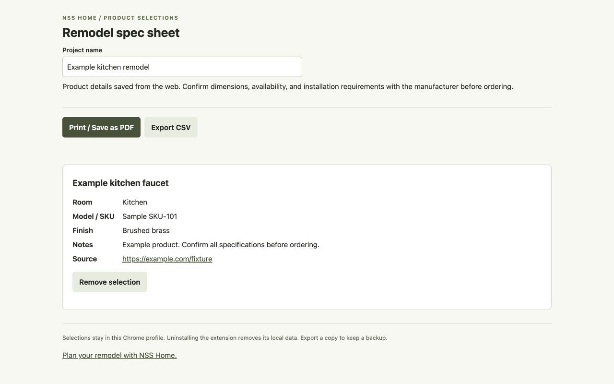

Spec Sheet Clipper
Spec Sheet Clipper turns product pages into a simple remodel selection sheet.
Save the product name and source link. Add the room, model, finish and the details that matter. Print the sheet or export a CSV.

Example selection shown in the spec sheet interface.
From a product page to one usable list
- Highlight the specifications you want to keep on a product page.
- Open Spec Sheet Clipper. The page title, link and selected text appear in the form.
- Check the details and add a room, model or finish.
- Save the selection. Open your sheet to review, print or export it.
If a site blocks clipping, enter the details manually. Always verify dimensions, variants and installation requirements with the manufacturer before ordering.
Your selections stay local
No sign-in. No analytics. No server upload. The extension uses local Chrome storage. Opening a source link visits that website normally.
Export a backup before uninstalling. Removing the extension removes its local saved data.
Release package
The first release package is available for review. Chrome Web Store publication is pending. This page doesn't claim store approval or an install count.
For questions about the tool, contact solutions@nsshome.co.